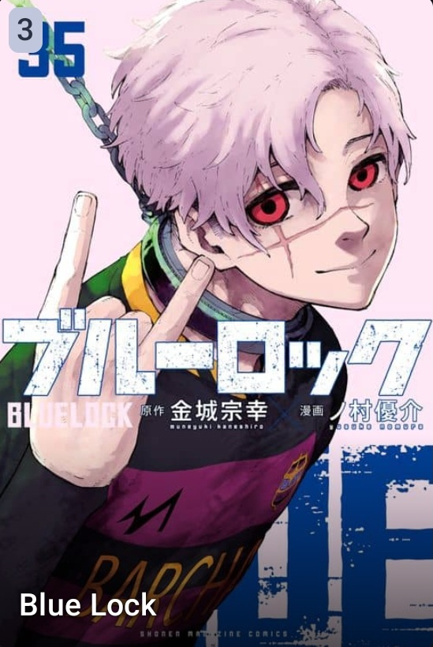
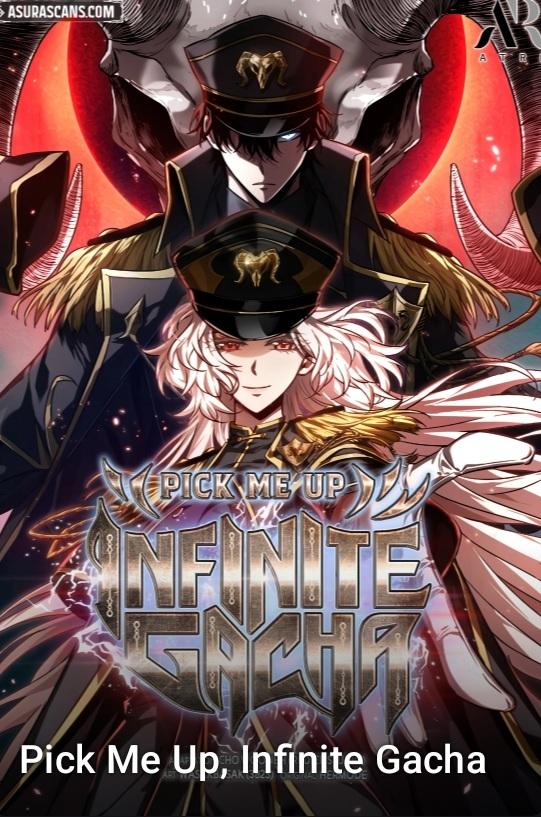
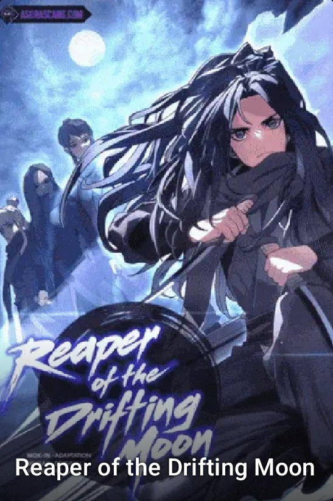
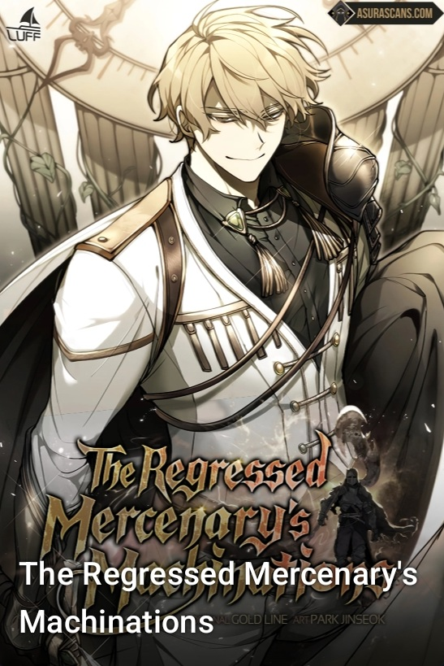

A Dragon Slayer's Peerless Regression
Synopsis:
Zeke Draker, the first direct descendant of the Dragon Slayer family to fail awakening. Possessing the talent of a healer instead of a swordsman, he was cast out by his family. Struggling desperately to grow stronger, Zeke met a tragic end.
At the moment of his death, mysterious words appeared before his eyes: [The soul of an Elder Dragon is engraved upon the will of the one who persists.] [An irreversible, promised power is being activated.] When he regained consciousness, he found himself back in the Dragon Slayer family that had abandoned him, 20 years in the past.
"If I can become strong, I’ll make use of anything and everything." Armed with a newfound, immortal power, the legend of a Dragon Slayer in a class of his own begins.
Genre:

Blue Lock
Synopsis:
Yoichi Isagi lost the opportunity to go to the national high school championships because he passed to his teammate who missed instead of shooting himself. Isagi is one of 300 U-18 strikers chosen by Jinpachi Ego, a man who was hired by the Japan Football Association after the 2018 FIFA World Cup, to guide Japan to winning the World Cup by destroying Japanese football. Ego's plan is to isolate the 300 strikers into a prison-like institution called "Blue Lock", in order to create the world's biggest "egotist"/striker, which has been lacking in Japanese football.
Genre:
Ice Lord
Synopsis:
At the young age of twenty, Seol Mudok, a master swordsman, became the Lord of the Northern Sea Ice Palace. Plunged into despair after the death of his lover, he discovers that with the legendary flower, the “Lotus of Love,” that his deceased lover has been reincarnated. In his quest, he descends into another world.
Genre:

Infinite Mage
Synopsis:
Abandoned at birth in a stable, Shirone was raised by commoners.As a child, he had gifted Insight and had learned how to read. After visiting the city, he finally saw the workings of magic, which he was immensely curious about.This inspired Shirone's dream of becoming a mage. However, the city was a place with a cruel and rigid social hierarchy. Here, Shirone discovered the hidden side of the world before he even reached adulthood...Will Shirone be able to achieve his dream of becoming a mage in this twisted world?
Genre:
Level 999 Goblin
Synopsis:
The protagonist Kim Chulsoo works his ass off for a living as a manual laborer in real life and by grinding for and selling items in a game.
He finally gets the chance to switch to a hidden class, hoping for that one big shot in life…! But the hidden class turns out to be... a Goblin Summoner?!
Genre:

Level Up with the Gods
Synopsis:
“Maybe Inner Gods can never defeat Outer Gods…” so thought Yuwon Kim, a plucky, high-ranking warrior, after a bitter defeat.
But Yuwon is too tenacious to give up. His loss becomes the dawn of a new journey as a returnee. With renewed determination, Yuwon starts back from where he began, smashing monster after monster and relearning his skills before taking on the Tower once again.
But can he fight his way through the tutorials and level up once more, or will his conquest crumble before him?
Genre:

Myst, Might, Mayhem
Synopsis:
All Jeong wants is a second chance -- for revenge! His grandfather’s gruesome death has transformed him into the bloodthirsty and ruthless Scythe Demon. He will stop at nothing until he has killed the man responsible. Yet rage and determination alone are not enough. He must train in martial arts if he ever wants to stand a chance against such a formidable foe. Will he succeed in his revenge on the murderer of his grandfather?
Genre:
- Action
- Fantasy
- Martial Arts
Murim Login
Synopsis:
An era where hunters thrive on hunting monsters that come from Gates. Jin Tae-Kyung is a low-rank hunter who picks up a VR machine, and accidentally logs into the game, which is set in the world of Martial Arts. After many ups and downs, Tae-Kyung is able to escape this world. The strength and skills, which he received in the Murim were able to be carried over back to the real world. This allows him to continue making a living a hunter… but he decides to return back to the world of Murim, out of care for his NPC friends.
Genre:
Nano Machine
Synopsis:
Nanotechnology meets martial arts at the Mashin Academy. Yeo-un’s mother may not be one of the High Priest’s six official wives, but his father’s blood still qualifies him for a chance at the position of Minor Priest. Will a mysterious nanomachine injection from a future descendent help Yeo-un in this fierce competition against his powerful half-siblings?
Genre:
- Action
- Adventure
- Martial Arts

Omniscient Reader's Viewpoint
Synopsis:
Dokja was an average office worker whose sole interest was reading his favorite web novel 'Three Ways to Survive the Apocalypse.' But when the novel suddenly becomes reality, he is the only person who knows how the world will end. Armed with this realization, Dokja uses his understanding to change the course of the story, and the world, as he knows it.
Genre:

Pick Me Up, Infinite Gacha
Synopsis:
The mobile gacha game 'Pick Me Up!' is known for being brutally difficult, and no one has been able to clear a dungeon. Loki, the fifth among all the world's masters, loses consciousness while trying to clear the dungeon. Upon waking up, Loki finds himself turned into a 1-star level 1 hero, 'Islat Han'. "It's him! I'm certain he's the one who brought me here!" In order to return to Earth, he must lead novice masters and heroes and break through the 100th floor of the dungeon! "You messed with the wrong person." This is the story of master Loki who is forced to carry everyone to victory and cannot afford a single defeat.
Genre:

Reaper of the Drifting Moon
Synopsis:
[From the author of Legend Of The Northern Blade.]He's in the deepest part of the Jianghu. Keep your eyes wide open if you do not wish to get dragged into the abyss.
Genre:
Reincarnation of the Fist King
Synopsis:
Dan Woosung, a man who once roamed the murim relying solely on his fists, met his sudden end at the hands of the demonic faction.
He then finds himself in the body of the eldest son of an affluent merchant group named Eunha. "I don't seek freedom from debts or grudges. Debts must be repaid. Grudges must be settled. "Though his new body offered only wealth, Dan Woosung rises again, backed with vast riches and the martial prowess of his previous life.
Now, he returns to the path of vengeance.
Genre:
- Action
- Adventure
- Martial Arts
Revenge of the Iron Blooded Sword Hound
Synopsis:
Raised to kill like a pack of loyal hounds, the Baskerville children took countless lives as a band of fearsome assassins. Despite being the shunned illegitimate son of the brood, Vikir served his family faithfully, only to meet his untimely demise at his father’s hands. But when he is inexplicably reborn with a second chance at life, Vikir, armed with the memories and knowledge of his past, swears to rise above the pack and take his revenge.
This time, he's ready to bite the hand that feeds.
Genre:
Second Life Ranker
Synopsis:
Yeonwoo’s Brother disappeared years ago, and he’s devastated to learn of his death. As he copes with his loss, he’s given a pocket watch and learns there’s more to his brother’s death : he was betrayed while competing in the Tower Of The Sun God.
Now it’s Yeonwoo’s turn to use the knowledge his brother left behind. Can Yeonwoo (call sign : Cain) navigate that world and gain enough power and experience to reach the top of the tower, defeating his brother’s enemies and all those who stand in his way?
Genre:
Solo Max-Level Newbie
Synopsis:
Jinhyuk, a gaming Nutuber, was the only person who saw the ending of the game [Tower of Trials]. However, when the game's popularity declined, it became difficult for him to continue making a living as a gaming Nutuber. Since he already saw the ending of the game, he was about to quit playing. But that day, [Tower of Trials] became reality, and Jinhyuk, who knew about every single thing in the game, took over everything faster than anyone possibly could! "I'll show you what a true pro is like."
Genre:
Surviving the Game as a Barbarian
Synopsis:
The protagonist, Lee Hansoo, finally reached the boss stage after nine years of playing the game "Dungeon and Stone", which no one had been able to clear until now. However, just as he entered the boss room, he saw a notification alerting him that he had cleared the tutorial and that he had possessed the body of the barbarian, Bjorn Jandel, who was a playable character in the game.
In the world of "Dungeon and Stone", only one city remained standing after the destruction of the world. A labyrinth would open every month, offering explorers a chance to clear it for rewards. In this world where barbarians are seen as useless in everything but battle, a barbarian who does not fight will not be able to survive. If one cannot pay the outrageous taxes demanded by the city, the only fate that awaits is a downgrade in status to a 'lower-class citizen'. If it is revealed that you are possessing the character you are playing, you will be named an "evil spirit" and killed.
The only way for Lee Hansoo to survive is to enter the labyrinth and fight while risking his life. With the skills he has accumulated over nine years of gameplay and a stupidly strong barbarian physique, he strives to survive in this game.
Genre:

The Devil Butler
Synopsis:
Because he had the heritage of the ancient Demonic Emperor, Demonic King Zhuo Yifan met the misfortune of being betrayed and killed by his trusted disciple. After being reborn, his cultivation went back to zero and he was trapped by a demon in his heart, and has no choice but to become the steward of the Luo Family's lone eldest miss. From being a Demonic King to being an insignificant steward of a broken household, how would he get along with his "heart demon eldest miss" and what power would he gain in order to lead himself and the declining family to rise back to the peak of the continent!
Genre:
- Action
- Adventure
- Martial Arts
The Great Mage Returns After 4000 Years
Synopsis:
Lucas Trowman was the greatest archmage in history until he was condemned by Demigod to spend eternity losing his mind. But 4,000 years later, he’s thrust back into this world, into the body of Frei Blake, the weakest, most un-talented student at the prestigious Westroad Academy for mages. After all this time, the world of magic has barely progressed. Could this be the work of Demigod? Determined to find out, Lucas seeks to reach the highest levels of power once again and get his revenge.
Genre:

The Indomitable Martial King
Synopsis:
A world where humans sell and buy otherworldly species as slaves. The great mage Rifenhardt is treated like the Demon King for helping the otherworldly species. A party of heroes arrive to bring down the Demon King! Rifenhardt succeeds in greatly injuring the heroes, but he faces death at the hands of the MARTIAL KING??! Tesslon… "Time and Space Regression Spell." However, he miraculously manages to cast this last-resort spell and regresses to the past. But… "I became the MARTIAL KING??! Tesslon, one of the heroes who tried to kill me and the strongest on the continent?!" Now begins Rifenhardt's adventures as both a great mage and the physically strongest man to change the world!
Genre:

The Regressed Mercenary's Machinations
Synopsis:
Ghislain Perdium, the Mercenary King and one of the continent's top seven, started a great war in an attempt to avenge his fallen family.His plans of revenge were going smoothly until he was slain by Idun, who he had never expected to make an appearance. Ghislain thought he died, but he woke up as a younger version of himself from before the fall of his household. With this second chance, he decided to fix all the wrong pieces of the puzzle and avoid making the same mistakes he did in his past life!
Genre:

The Return of the Crazy Demon
Synopsis:
Yi Zaha. The crazy demon crazy for martial arts.While he was running away after stealing the heavenly pearl of the Demon Cult Leader, he fell off a cliff.After thinking that everything was over, he opened his eyes to see that he had returned back to when he was a waiter...And he is being beat up for something that he didn't do.The crazy demon who returned to the beginning of his days as a waiter!Will he go crazy again, or will he drive his enemies crazy?
Genre:
Tyrant of the Tower Defense Game
Synopsis:
Protect the Empire was considered unbeatable for over a decade until streamer extraordinaire Mr. Gamer Geek comes along and defeats the game on its hardest mode. But just when he's about to rest on his laurels, he's sucked into the world of the game by some mysterious figure and thrust into Prince Ash's body!
Ash now realizes that every click and command he had mindlessly sent out had real, gruesome costs - including his teammates' lives that he sacrificed for the sake of victory. To make up for his previous actions, Ash promises to keep his whole team alive this time while using his wits and knowledge to survive the hellish onslaught of monsters.
But who brought him to this world in the first place, and why?
Ash may soon find the answers to these questions - if he can survive the bloody battlefield first!
Genre:
World’s Strongest Survivor
Synopsis:
"It isn't the strongest who survives. The one who survives is the strongest."
After being discharged from the military, Jin Seowoon did nothing but play games like a loser. One day, he was invited to the world of "Cloyd Survival," which resembled a game he enjoyed.
In that world were masters of martial arts, kings from other worlds, and notorious killers. It was a gathering of monsters that surpassed human imagination.
Jin Seowoon had just one objective—to survive and become one of the top ten. Here lies a tale of survival with Jin Seowoon's life at stake.
Genre: